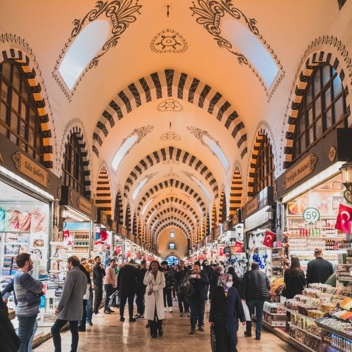
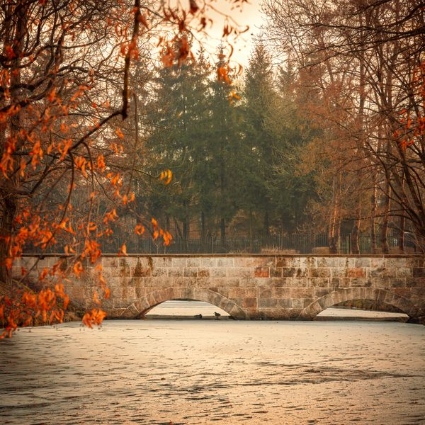
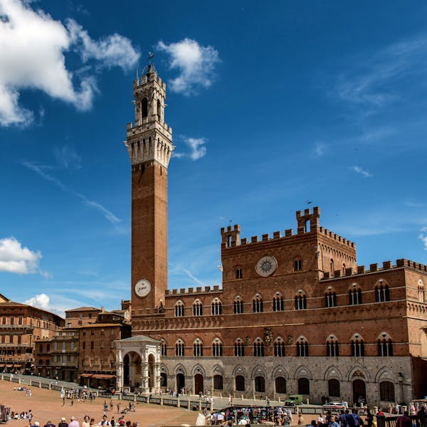
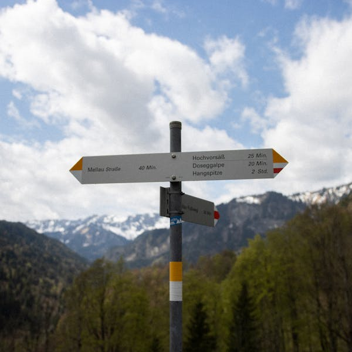
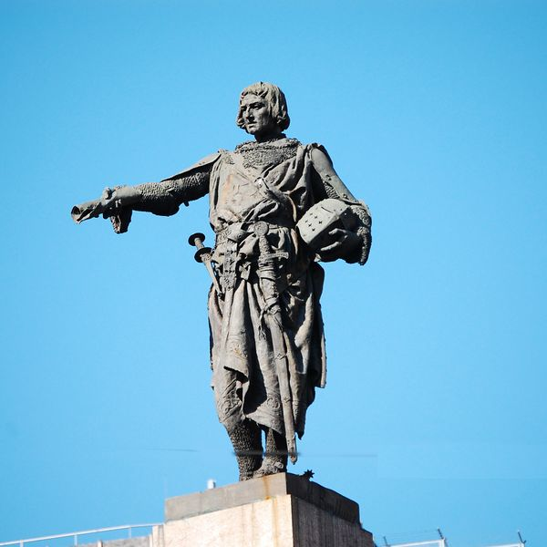
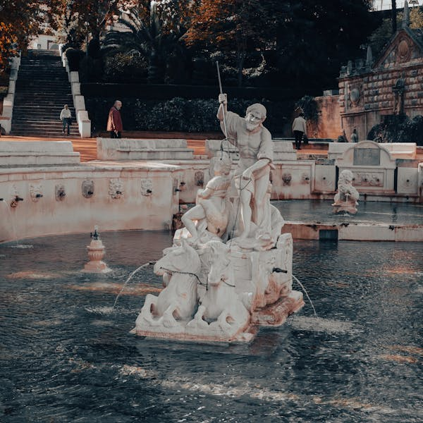
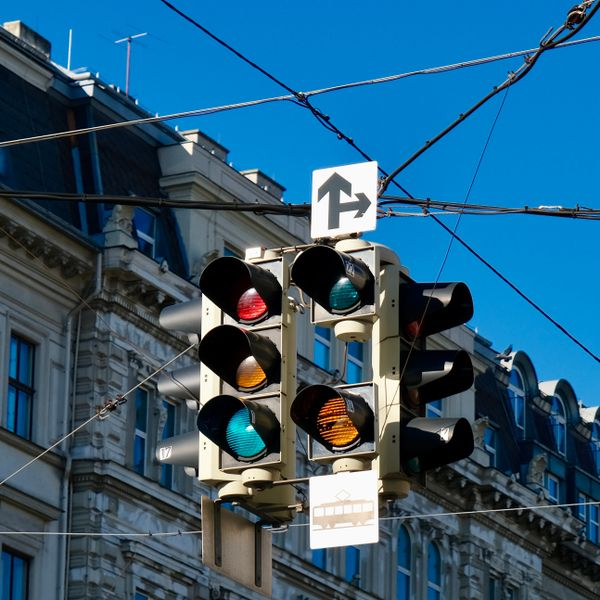

A

a large market where many traders sell goods
B

a structure that carries a road over a river
C

an open public space in the middle of a town
D

a sign showing directions and distances
E

a statue that reminds people of a famous person
F

a structure that sends water up into the air
G

a building where Muslims pray
H

a place where two roads meet and cross